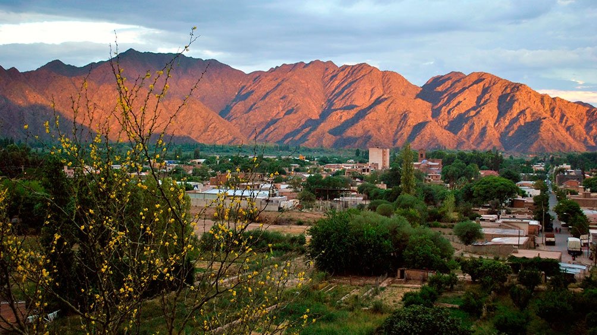

Reseña Histórica
 Catamarca, es una de las 23 provincias en las que está dividida la República Argentina. Su capital y ciudad más poblada es San Fernando del Valle de Catamarca. Ubicada al noroeste del país, en la región del Norte Grande Argentino, limitando al norte con Salta, al este con Tucumán y Santiago del Estero, al sureste con Córdoba, al sur con La Rioja y al oeste con Chile, cuyo límite está determinado por la divisoria de agua de la cordillera de los Andes. Fue habitada por la población nativa de la región durante varios milenios hasta la intervención de los conquistadores españoles a mediados del siglo XVII, y desde entonces ha recibido varios grupos de inmigrantes, especialmente españoles, aunque a diferencia de otras provincias argentinas, estos no han superado a la población originaria; y de la mezcla de ambos grupos surgió la actual población de la provincia, compuesta principalmente por mestizos.
Departamento Ancasti
Ancasti es uno de los 16 departamentos que componen la provincia de Catamarca en Argentina, ubicado en la región este de la provincia.
Ver más...Departamento Tinogasta
Fiambalá es una localidad del Departamento Tinogasta en el oeste de la prov. Argentina de Catamarca, y es la última ciudad que alberga la RN 60 .
Ver más...Departamento Ambato
San Fernando del Valle de Catamarca es la capital de la prov. Argentina de Catamarca y la ciudad cabecera de su departamento Capital.
Ver más...Departamento Fray Mamerto Esquiú
Fray Mamerto Esquiú, departamento de la provincia de Catamarca, Argentina, Se divide en 7 distritos.
Ver más...Departamento Paclín
Paclín es un departamento de la provincia de Catamarca en Argentina. El departamento está constituido con un único municipio homónimo.
Ver más...Departamento Capayán
Capayán es un departamento de la Provincia de Catamarca. En Capayán se registra los asentamientos humanos más antiguos del Valle de Catamarca.
Ver más...